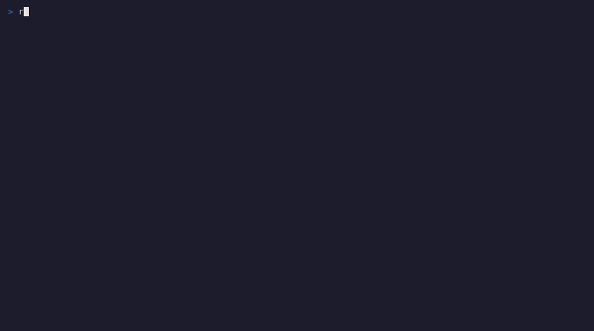

Browse and restore files from a restic repository by time, anchored on a folder. Like Time Machine, in your terminal.

You know the file was in ~/dev/project last Tuesday. With plain restic you mount the repository or list snapshots and guess which one has it. restoric starts from the folder instead and steps through the moments it changed.
:undo puts it back.brew install borje/tap/restoricOr, with Rust 1.91+:
cargo install --locked restoricRelease binaries for Linux (x86_64, aarch64, glibc or static musl), Debian/Ubuntu (.deb) and macOS are on the releases page.
restoric demo # no repository neededexport RESTIC_REPOSITORY=sftp:nas:/backup/restic
export RESTIC_PASSWORD_COMMAND="pass show restic"
restoric # the current folder
restoric ~/dev/project # or any folder in your backups| j k h l | Move, parent / open |
| H L | Older / newer change in this folder |
| ⇥ d | Preview content or diff / full-screen diff |
| y p P | Yank, restore next to it, overwrite |
| s / f | Search all snapshots, search, filter |
| ? | Full list |